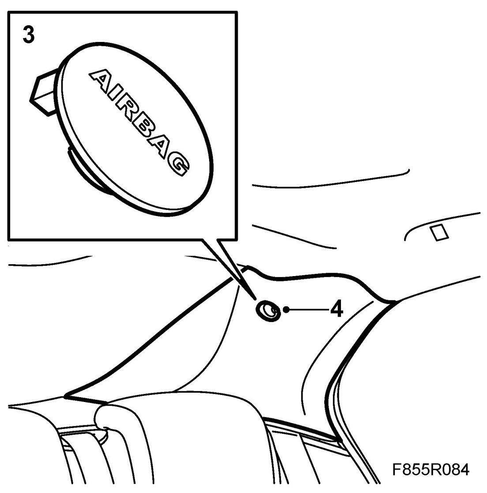
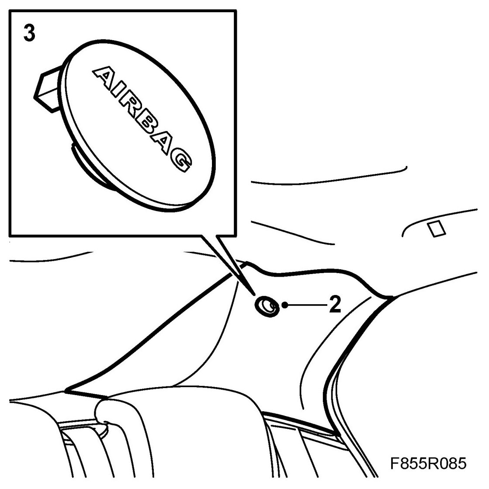

C-Pillar Trim
C-pillar Trim
To remove
1. Fold down the rear seat back rest.
2. Remove the parcel shelf trim.
3. Remove the screw cover from the C-pillar trim. Use 82 93 474 Removal tool.

4. Slacken the bolt from the C-pillar trim. Do not unscrew the bolt completely as there is an expander on the bolt (which could get lost).
5. Remove the C-pillar trim by pulling the trim straight out to release the clips from the C-pillar.
To fit
1. Put the C-pillar trim in place and press it onto the two clips.
WARNING: Take care not to damage the inflatable curtain. Any damage can prevent the inflatable curtain from providing the intended protection for passengers in the event of a collision.
2. Tighten the screws.

Tightening torque 2 Nm (1 lbf ft)
3. Fit the cover plate to the C-pillar trim.
4. Fit the parcel shelf trim.
5. Raise the rear seat back-rest.